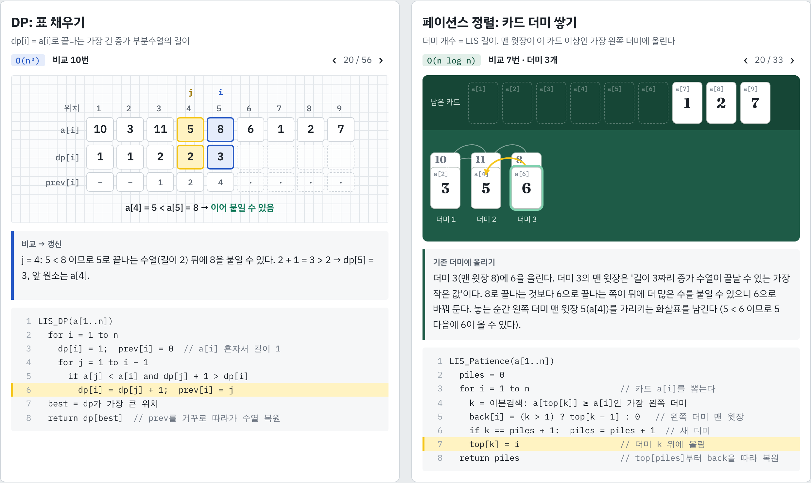
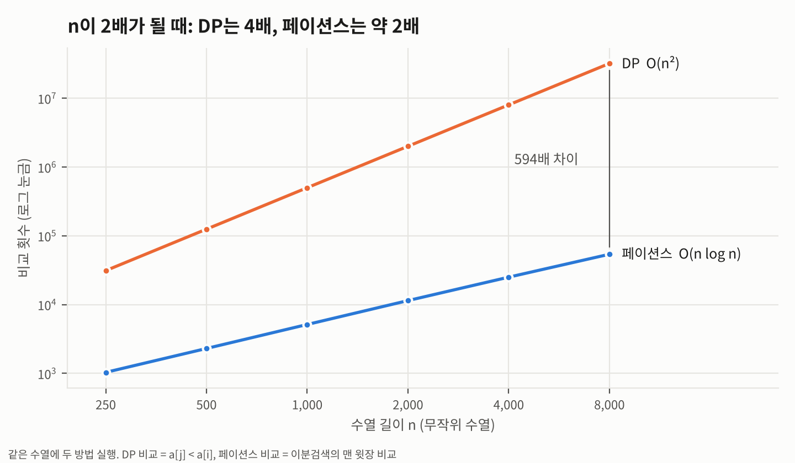
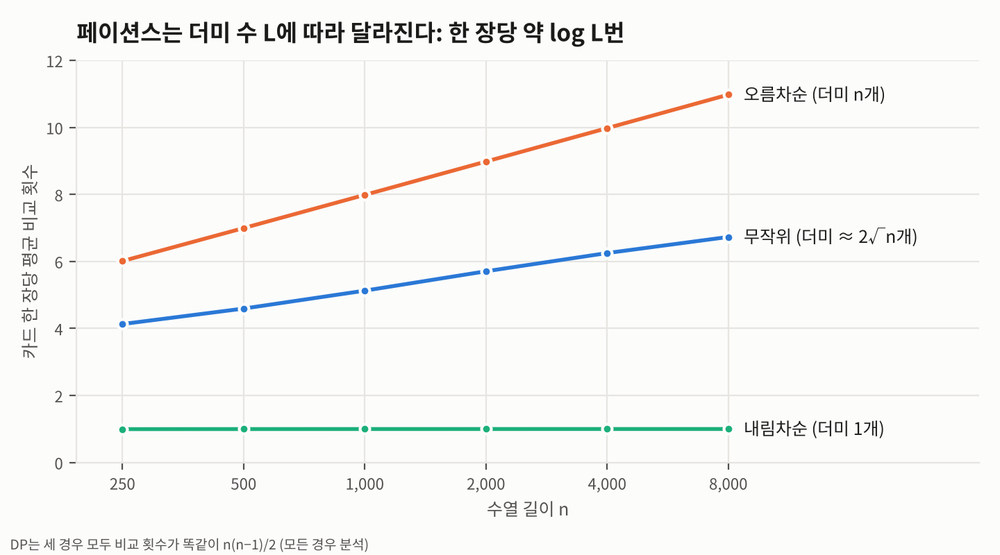

2026학년도 2학기 알고리즘 과제 보고서
DP O(n²)와 페이션스 정렬 O(n log n)의 내부 동작 시각화와 비교
| 학번 | {{STUDENT_ID}} | 이름 | {{NAME}} |
|---|---|---|---|
| 분반 | {{SECTION}} | 선택 주제 | 주제 A. 알고리즘 동작 시각화 |
| 알고리즘 | 최장 증가 부분수열(LIS): ① 동적계획법(DP) ② 페이션스 정렬(Patience Sorting) | ||
| 웹 시각화 | {{WEB}} | ||
| 소스 코드 | {{REPO}} | ||
수열에서 원래 순서는 그대로 두고 몇 개를 골라, 뒤로 갈수록 엄격히 커지게 만들 때 가장 긴 것을 찾는 문제다. 예를 들어 10, 3, 11, 5, 8, 6, 1, 2, 7에서는 3, 5, 6, 7이 길이 4로 가장 길고, 이 수열에서는 이것 하나뿐이다. 길이 n인 수열의 부분수열은 2ⁿ개라서 전부 확인하면 지수 시간이 걸린다.
git diff --patience는 두 파일에 한 번씩만 나오는 줄을 짝지은 뒤, 서로 엇갈리지 않는 가장 많은 짝을 고를 때 페이션스 정렬로 LIS를 구한다 [3][4]. 예를 들어 옛 파일의 고유한 줄 1~5가 새 파일에서 2, 5, 1, 3, 4번째에 있다면, 위치 수열의 LIS인 2, 3, 4(또는 1, 3, 4)에 해당하는 줄은 그대로 두고, 나머지 줄은 삭제·추가된 줄로 표시한다.부분 문제. dp[i] = "a[i]로 끝나는 가장 긴 증가 부분수열의 길이"로 정한다. 끝나는 원소를 고정하면, 그 앞에 올 수 있는 원소는 "a[i]보다 작고 앞에 있는 원소"로 정해진다.
최적의 원칙. a[i]로 끝나는 가장 긴 수열에서 마지막 a[i]를 빼면, 그 앞부분은 반드시 "a[j]로 끝나는 가장 긴 수열"이어야 한다. 더 긴 것이 있다면 그걸로 바꿔서 a[i]를 붙이면 더 길어지므로 모순이다. 그래서 작은 문제의 최적해로 큰 문제의 최적해를 만들 수 있다.
채우는 순서와 답. dp[i]는 왼쪽 칸만 참조하므로 i = 1부터 차례로 채운다. 답은 dp 전체의 최댓값이다. 어느 j에서 왔는지를 prev[i]에 적어 두면, 최댓값 위치에서 prev를 거꾸로 따라가 실제 수열을 복원할 수 있다. 3장의 Floyd 알고리즘이 P 배열로 경로를 복원한 것과 같은 방식이다.
수열의 수를 카드라고 생각하고 왼쪽부터 한 장씩 꺼낸다. 규칙은 하나다.
카드를 놓을 때 바로 왼쪽 더미의 맨 윗장을 가리키는 화살표(back)를 남긴다. 다 놓으면 더미 개수가 LIS의 길이이고, 마지막 더미의 맨 윗장에서 화살표를 따라가면 실제 수열이 나온다.
새 더미는 "모든 맨 윗장보다 클 때"만 오른쪽 끝에 생긴다. 기존 더미 k에 올릴 때는 새 카드 x가 더미 k−1의 맨 윗장보다 크고(그래서 k−1에 못 올라감) 원래 맨 윗장 이하이므로, 바꾼 뒤에도 순서가 유지된다. 정렬된 배열이니 올릴 더미를 이분검색으로 O(log 더미 수)에 찾는다.
같은 길이라면 끝이 작을수록 뒤에 더 많은 수를 붙일 수 있다. 그래서 x를 더미 k 위에 올리는 것은 "길이 k의 최소 끝값을 x로 낮추는" 일이다. 이 관점에서 페이션스 정렬은 DP를 뒤집은 것이다. DP는 "a[i]로 끝나면 길이가 몇인가"를 원소마다 저장하고, 페이션스는 "길이 k로 끝나는 가장 작은 값은 무엇인가"를 길이마다 저장한다. 길이별 값이 정렬돼 있어서 이분검색을 쓸 수 있고, 그 덕분에 n²이 n log n으로 줄어든다.
두 부등식에서 LIS 길이 = 더미 수이다. ∎
주의: 마지막 맨 윗장들을 그대로 읽으면 답이 아닐 수 있다. 예제의 마지막 맨 윗장은 1, 2, 6, 7인데, 6은 1과 2보다 먼저 나온 수라서 이 순서로는 부분수열이 아니다. 반드시 화살표를 따라가야 한다(5.3절 그림 참고).
교재(Neapolitan)와 같은 C++ 스타일 의사코드다. 배열 인덱스는 1부터 쓴다. 두 코드 모두 Python으로 그대로 옮겨서 완전탐색과 10,000번 대조했다(8장).
페이션스 정렬은 더미의 맨 윗장만 알면 되므로 더미 전체를 저장할 필요가 없다. top[]과 back[]만 있으면 길이와 수열을 모두 구할 수 있다.
| DP | 페이션스 정렬 | |
|---|---|---|
| 단위연산 | a[j]와 a[i]의 비교 | 이분검색에서 맨 윗장과 a[i]의 비교 |
| 시간 (최악) | Θ(n²) | Θ(n log n): 이미 정렬된 입력(더미가 n개) |
| 시간 (최선) | Θ(n²): 모든 경우 같음 | Θ(n): 거꾸로 정렬된 입력(더미 1개) |
| 더 정확한 상한 | 정확히 n(n−1)/2번 | O(n log L) (L = LIS 길이 = 더미 수) |
| 공간 | Θ(n): dp[], prev[] | Θ(n): top[], back[] (길이만 구하면 O(L)) |
| 예제(n = 9) 비교 횟수 | {{DP_COMPS}}번 = 9·8/2 | {{PAT_COMPS}}번 |
DP: 모든 경우 Θ(n²). 칸 i를 채울 때 안쪽 루프가 j = 1, …, i−1을 조건 없이 끝까지 돌며 비교한다. 따라서 비교 횟수는 입력과 상관없이
이다. 1장의 교환정렬과 같은 형태의 모든 경우 분석이다. 공간은 길이 n 배열 2개라서 Θ(n)이다.
페이션스 정렬: O(n log n). 카드 한 장마다 맨 윗장 p개(p ≤ L ≤ n)에서 이분검색을 하고, 이분검색은 ⌈log₂(p + 1)⌉번 이하로 비교한다. 따라서
이다. 더미 수 L이 작을수록 빨라진다. 거꾸로 정렬된 입력은 더미가 1개라서 카드마다 비교 1번(첫 카드는 0번), 총 n − 1번으로 Θ(n)이다. 이미 정렬된 입력은 카드마다 새 더미가 생겨 더미가 n개까지 늘어나므로 가장 많이 비교한다. 공간은 top[]이 최대 L칸, back[]이 n칸이라서 Θ(n)이다.
핵심 차이. DP는 a[i] 앞에 올 원소를 찾으려고 왼쪽 원소 전부를 보지만, 페이션스는 성질 ②(길이별 최소 끝값이 정렬돼 있음) 덕분에 정렬된 L개 값에서 이분검색만 한다. "선형 탐색 → 이분검색"으로 바뀐 것이 n² → n log n의 이유다.
입력은 원소 9개인 수열 {{A}}이다. 아래 그림은 모두 3장 의사코드를 실제로 실행해 얻은 단계 기록에서 프로그램으로 자동 생성했다. 그래서 그림 속 숫자는 실행 결과와 항상 같다.
{{WEB}} 에서 두 알고리즘을 나란히 한 단계씩 넘겨 볼 수 있다. DP는 56단계, 페이션스는 33단계이며, 단계마다 "지금 무엇을 했고 왜 그렇게 했는지"를 문장으로 보여주고 의사코드의 현재 줄을 강조한다. 예제 4개(기본, 이미 정렬됨, 거꾸로 정렬됨, 같은 수 포함)와 직접 입력(최대 10개)을 지원한다.

그림마다 칸 i를 채운 직후의 표다. 파란 칸은 지금 채운 i, 노란 칸은 이어 붙인 앞 원소 prev[i]이고, 노란 화살표가 "이 원소 뒤에 붙였다"를 뜻한다. 실제로는 칸마다 왼쪽을 전부 비교하며(총 {{DP_COMPS}}번), 웹 시각화에서는 비교 하나하나를 따로 볼 수 있다.
dp의 최댓값은 dp[9] = 4다. prev를 거꾸로 따라가면 {{DP_PATH}} 이므로 LIS는 3, 5, 6, 7이다.
그림마다 카드 한 장을 놓은 직후의 테이블이다. 초록 테두리가 방금 놓은 카드이고, 노란 화살표가 그 카드가 가리키는 왼쪽 더미의 맨 윗장이다. 아래에 깔린 카드는 위쪽 모서리에 숫자가 보인다.
더미가 4개이므로 LIS 길이는 4다. 마지막 더미의 7에서 화살표를 따라가면 7 → 6 → 5 → 3, 뒤집으면 3, 5, 6, 7이다(분홍색). 3과 5는 다른 카드 아래에 깔려 있지만 화살표로 찾을 수 있다.
함정. 맨 윗장 1, 2, 6, 7도 증가하는 것처럼 보이지만, 2(a[8])는 6(a[6])보다 뒤에 나온 수라서 이 순서로는 뽑을 수 없다. 맨 윗장은 "길이별 최소 끝값"일 뿐, 하나의 수열이 아니다.
카드 6을 8 위에 올리는 장면(카드 6)이 이 알고리즘의 핵심이다. 규칙을 어기고 6을 올리지 않아서 더미 3의 맨 윗장이 8로 남아 있었다고 가정하고, 마지막 카드 7이 어떻게 되는지 비교했다.
맨 윗장이 [1, 2, 6]이라 7은 6보다 크다. 올릴 더미가 없으므로 새 더미 4가 생기고, 길이 4(3, 5, 6, 7)를 찾는다.
맨 윗장이 [1, 2, 8]이면 7 ≤ 8이라 7은 더미 3에 올라간다. 더미는 3개에 그쳐서 길이 3이라는 틀린 답이 나온다.
"길이 3짜리 수열의 최소 끝값"을 8에서 6으로 낮춰 둔 덕분에, 나중에 온 7이 그 뒤에 붙을 수 있었다. 성질 ②를 그대로 보여주는 장면이다.
무작위 수열, 이미 정렬된 수열, 거꾸로 정렬된 수열에 대해 n을 250부터 8,000까지 2배씩 늘리며 비교 횟수와 실행 시간을 쟀다(Python 3.13). 비교 횟수는 컴퓨터 성능과 무관해서 이론과 직접 비교할 수 있다.

| n | 실제 LIS | 2√n | DP 비교 | 페이션스 비교 | 비교 차이 | DP 시간(ms) | 페이션스(ms) |
|---|
표 1. 무작위 수열. DP 비교 횟수는 모든 행에서 정확히 n(n−1)/2이다.

| n = 8,000 | LIS(=더미 수) | DP 비교 | 페이션스 비교 | 한 장당 | 상한 n·⌈log₂(L+1)⌉ |
|---|
표 2. 입력 형태별. DP는 세 경우 모두 같지만(모든 경우 분석), 페이션스는 상한 n·⌈log₂(L+1)⌉ 안에서 L에 따라 달라진다.
| n (무작위) | LIS | 2√n | DP 비교 | 페이션스 비교 | DP 시간 | 페이션스 시간(실측) |
|---|
표 3. DP 시간은 n = 8,000에서 잰 비교 1번당 약 {{NS}}ns를 곱한 추정치다(Python). 페이션스는 직접 실행한 값이다.
백만 줄짜리 파일 두 개를 git diff --patience로 비교하는 상황을 생각하면, DP로는 비교만 5×10¹¹번(이 환경 기준 약 10시간)이 걸려서 쓸 수 없다. 페이션스 정렬은 1초 안에 끝난다.
| DP | 페이션스 정렬 | |
|---|---|---|
| 장점 | 점화식이 직관적이고 구현이 짧다. "가중치 합이 가장 큰 증가 수열"처럼 조건이 바뀐 변형에도 점화식만 고치면 바로 쓸 수 있다. | O(n log n)으로 빠르다. 길이만 필요하면 메모리도 O(L)이다. |
| 단점 | n이 수만을 넘으면 너무 느리다. | 왜 맞는지 직관적으로 보이지 않아서 증명이 필요하다. 맨 윗장을 답으로 착각하기 쉽다. |
| 적합한 상황 | n이 수천 이하이거나, 문제를 변형해야 할 때 | n이 크거나 빠르게 반복 실행해야 할 때(diff 도구 등) |
두 알고리즘은 같은 정보를 다른 방향에서 저장한다. DP는 원소마다 "여기서 끝나면 몇 길이인가"를, 페이션스는 길이마다 "이 길이로 끝나는 가장 작은 값은 무엇인가"를 저장한다. 후자가 정렬된 형태라서 이분검색을 쓸 수 있고, 이 작은 관점 전환이 n²과 n log n의 차이를 만든다.
틀린 결과가 들어가지 않도록 모든 숫자와 그림을 프로그램으로 대조했다(코드는 저장소의 analysis/ 폴더).
| 무엇을 | 어떻게 | 결과 |
|---|---|---|
| Python 기준 구현(두 알고리즘) | 길이 1~12의 무작위 수열 20,000개(중복·음수·정렬·역정렬 포함)에서 모든 부분수열을 확인하는 완전탐색과 비교. 돌려준 수열이 실제로 증가 부분수열인지도 확인 | 불일치 0 |
| 3장 의사코드 | 의사코드를 글자 그대로 옮긴 코드를 완전탐색과 10,000번 비교 | 불일치 0 |
| 웹 시각화(JavaScript) | 수열 2,004개에서 Python 구현과 모든 단계의 상태와 설명 문장이 같은지 비교 | 불일치 0 |
| 실측 | 측정마다 두 알고리즘의 답(길이)이 같은지 확인 | 모두 일치 |
과제 안내에 따라 AI 도구(Anthropic Claude)를 사용했다. 알고리즘 후보 조사, 구현 코드와 웹 시각화 코드 작성, 그림 생성 스크립트, 보고서 초안 작성에 활용했다. AI가 만든 코드와 설명은 8.1의 자동 대조로 확인했고, 대조 과정에서 발견한 문제(설명 문장의 조사 오류, 화살표 방향이 헷갈리게 그려지는 문제, 오름차순 입력의 비교 횟수를 잘못 계산한 식 등)를 고쳤다. 외부 사실(git diff, LIS ≈ 2√n)은 아래 참고문헌의 원문을 확인하고 인용했다.
--patience, --diff-algorithm). git-scm.com/docs/git-diff